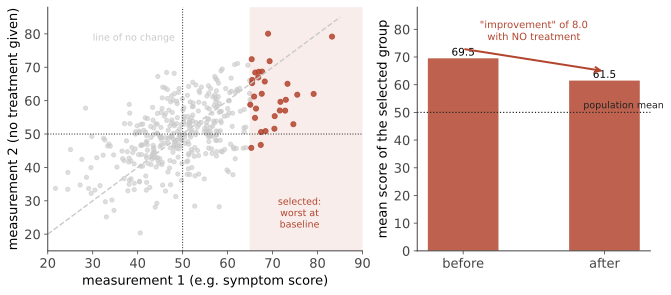

本页目录
边界 I · 安慰剂、自然史与均值回归
这一页回答一个基础问题：为什么"我用了它，我好了"几乎不能作为有效性的证据？ 答案是有三股力量在同时把结果推向"好转"，它们与治疗本身完全无关——理解这三股力量，是理解为什么需要对照组的全部理由。
1. 三股与治疗无关的改善力量

1. 自然史（natural history）：大多数急性病会自愈（上呼吸道感染、多数腰痛、多数急性腹泻），大多数慢性病会波动。人们在症状最重时寻求治疗 → 接下来好转的概率天然很高。
2. 均值回归（regression to the mean）：上图。这是一个纯统计现象：只要两次测量不完全相关，按极端值选出的子集在复测时必然向均值移动。血压、疼痛评分、血糖、抑郁量表——所有波动的指标都受此影响。
\(\rho\) 越小、\(x\) 越极端，回归越强。
3. 安慰剂反应与报告偏差：期望、条件反射、关注本身、以及"想让医生高兴"的报告倾向。
三者叠加的后果：任何在症状高峰启动的干预，都会看起来有效。 这就是"我试过，有用"这类证据的结构性缺陷。
2. 安慰剂效应：真实但被夸大
需要仔细区分三件事：
| 内容 | |
|---|---|
| 安慰剂组的改善 | = 自然史 + 均值回归 + 安慰剂效应 + 报告偏差 |
| 真正的安慰剂效应 | 需要与"不治疗组"比较才能分离 |
| 常见的夸大 | 把整个"安慰剂组改善"都算作安慰剂效应 |
一项被广泛引用的系统综述（比较安慰剂组与无治疗组）得出的结论是：安慰剂对客观、二分类结局的效果很小或没有；对主观、连续型结局（尤其疼痛）有可测但不大的效果。
换句话说：安慰剂能改变"感觉如何"，但很难改变"发生了什么"——它不缩小肿瘤、不降低血压到有临床意义的程度、不治疗感染。
有真实机制的部分：疼痛的安慰剂镇痛可被纳洛酮部分逆转（内源性阿片参与）；帕金森病的安慰剂反应伴随纹状体多巴胺释放。这些是真实的生理现象，但效应量有限且集中在特定领域。
反安慰剂（nocebo）同样真实：预期副作用会产生副作用。他汀肌肉症状是最好的例子（第 15 页）：n-of-1 随机试验显示大部分症状在服用安慰剂时同样出现——这意味着"停药后症状消失"也不能证明是药物所致。
开放标签安慰剂（明确告知是安慰剂）的研究显示仍有一定效果，但试验多为小样本、无法盲法、且以主观结局为主，结论应谨慎。
3. 假手术对照：一个残酷但必要的设计
手术领域长期缺乏对照试验，理由是伦理与可行性。但当假手术（sham surgery）试验真的被做出来时，结果一再令人不安：
- 膝关节镜清理术治疗骨关节炎：与假手术无差别；
- 退行性半月板撕裂的关节镜部分切除：与假手术或运动疗法无差别；
- 椎体成形术：早期与假手术对照的试验未显示优势（后续证据仍有争议）；
- 某些冠脉支架用于稳定型心绞痛的症状改善（ORBITA 试验）：与假操作相比，运动耐量的改善差异远小于预期。
这些结果的共同含义：手术的安慰剂成分远大于普遍认知——创伤性越大、仪式感越强的干预，安慰剂效应越强（这本身是被实验证实的规律）。
4. 为什么临床经验会系统性误导
这是本页最重要的一节，也是"经验丰富的医生也需要循证医学"的理由。
六个机制：
- 三股力量（上文）把功劳给了治疗；
- 反馈缺失：好转的人不回来复诊（被算作成功），恶化的人去了别处（不进入你的经验样本）——分母不可见；
- 确认偏差：成功的案例被记住并讲述，失败的被归因于"病情复杂"；
- 无对照：你永远看不到同一个病人不治疗会怎样；
- 样本量：一位医生一生见到的某病病例数，远小于检出中等效应所需的样本；
- 可得性偏差：印象深刻的成功案例主导判断（第 04 页）。
历史证明：放血疗法在西方医学中持续了两千年，每一代医生都"见过它有用"。
正确的态度不是抛弃临床经验——经验在模式识别、判断严重程度、操作技能、与患者沟通上不可替代；而是承认它在"这个治疗有没有效"这个特定问题上不可靠。
🔗 这与你在预测层的判断同构：个别命中的记忆无法支持"有预测力"的结论，必须有预先锁定的判据、完整的分母、以及对照基线。你 2026-07 那次校验之所以有价值，正是因为它提供了临床经验提供不了的东西——完整分母 + 明确基线。
5. 如何在有安慰剂效应的世界里做决定
四条实用原则：
- 对客观结局（死亡、骨折、住院、检验值），安慰剂效应很小 → 对照组的改善主要来自自然史与均值回归；
- 对主观结局（疼痛、疲劳、情绪），必须有安慰剂对照，否则数据无法解释；
- "停药后复发"不是有效性证据（反安慰剂 + 期望）；"n-of-1 交叉试验"才是——对慢性稳定的症状，这是个体层面唯一可靠的方法；
- 利用而不欺骗：关注、解释、共情、合理的期望管理本身就有效——这些可以在诚实的前提下提供，不需要开无效的药。
6. 一个必须说清的伦理点
"既然安慰剂有效，那给患者开点无害的安慰剂有什么问题？"
三个问题：1. 欺骗损害信任，一旦被发现代价极大；2. 它的效果主要在主观症状上，可能延误真正的诊断与治疗；3. "无害"的安慰剂常常不是无害的——抗生素、注射、补充剂都有风险与成本，且强化了"每次不适都需要吃点什么"的就医模式。
更好的替代：明确的解释 + 自然病程的说明 + 症状管理 + 安全网。"这是病毒感染，大约一周会好，期间可以这样缓解症状；如果出现 X 请回来"——这段话本身就是治疗。
参考与更新
复审记录：最后复审 2026-08-02；按六个月规则，下一次常规复审不晚于 2027-02-02。若安全信号、指南/监管更新或动态清单变化，则提前复审；具体适用地区以各条来源与当地最新版本为准。
- Cochrane placebo interventions review（安慰剂干预系统综述；2010；国际。）
- Open-label placebo for irritable bowel syndrome（开放标签安慰剂原始随机试验；2021；美国。）
下一页：药物审批与撤市——制度层面如何试图解决本页提出的问题，以及它在哪里失败。